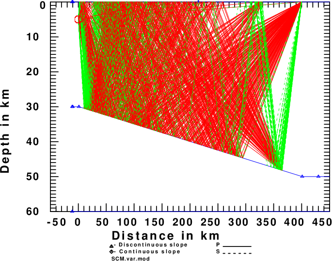

Because of a need to examine offshore earthquakes recorded on land, and because almost synthetic seismogram codes of Computer Programs in Seismology (CPS) involve 1-D velocity models, it was time to review the 2-D wave propagation technique proposed in Keilis-Borok et al (1989). The solution that was programmed in slat2d96 and spulse96 makes a number of assumptions for wave propagation in a medium with weak horizontal heterogeneity. These are that there are no reflections and mode conversions, and that energy is conserved for each model.
While easy to implement, the question is whether the results can be independently modeled using other codes in the CPS package. Assuming that waves are not reflected by a gradient, this tutorial will focus on a sloping simple crustal model with the depth to the Moho increasing linearly from 30 km to 50 km over a 400 km span. The Cerveny codes (cprep96, cseis96, spusle96) will be used to make high frequency ray synthetics at a distance of 400 km from the source. These will be compared to the slat2d synthetics created using slat2d96 for 201 models of thickness 30.00, 30.10, ..., 49.90, 50.00 km with widths of 2.0 km
First download SLAT2Dgrad.tgz and then
gunzip -c SLAT2Dgrad.tgz | tar xf - cd SLAT2Dgrad DOALLWhen you are done running the test case, enter DOCLEAN.
The test study consists of two parts. First the Cerveny ray tracing is performed in the directory Cerveny. The result are some figures and the Green's functions computed at a distance of r=400 km for a source at a depth of 10 km at a location with a crustal thickness of 30 km. At the receiver distance, the crustal thickness is 50 km. The crustal thickness varies linearly between these two points.
The next figures the model, the desired rays, and the actual ray paths in the medium:
The model. The red circle indicates the source location and the red triangle the receiver. |
Ray specification within the layer. This defines the individual rays. Each linear segment can be P, SV or SH. Note that the P can be converted to SV and vice versa at a layer boundary. |
 Actual ray paths it he medium. |
The DOEGN script creates 201 velocity models to represent a stepping structure with crustal thickness from 30 to 50 km. A locked mode approximation is used in an attempt to model P arrivals and high phase velocity sub-critical reflections. Instead of the single layer over a halfspace model used for the Cerveny synthetics, the original halfspace is not 120 km thick and a third layer is introduced as the new halfspace, with P and S velocities of 18 and 9km/s, respectively. This will ensure that the modal synthetics will contain arrivals with phase velocities up to 9 km/sec, which means that direct P waves should be modeled.
After the eigenfunctions are computed, modal synthetics are computed using only the fundamental mode (FUND), the higher modes (HIGH) and all modes (FULL). The reason for doing this is o show the contribution of the fundamental and higher modes to the sum. More importantly, the FULL will be compared to the Cerveny results for the transverse component Green's functions and the HIGH will be compared to the vertical and radial component Green's functions since the asymptotic ray theory cannot model the Rayleigh wave.
It is hoped that the comparisons will give confidence to the technique used in slat2d96.
The following links present the various Greens' functions.
The following compare the SH synthetics from the Cerveny ray tracing to the modal superposition of Love wave modes. For each Green's functions there are two figures. The one on the left displays the traces in a relative sense, while the figure on the right plots all with the same amplitude scale. For each of the figures, the traces displayed from top to bottom are the Cerveny synthetic, the sum of all the modes, the fundamental mode and the higher mode synthetics. The agreement between the Cerveny and the sum of all modes is superb. This comparison demonstrates that the technique introduced by Keilis-Borok et al (1989) works well. For the TSS and THF Green's functions, the fundamental mode is required to match the Cerveny synthetic.
The following figures are displayed in the same layout as above. The big problem in comparing the traces is that the Cerveny method cannot model the fundamental mode Rayleigh wave arriving at about 80 sec. Theoretically, we could make this signal smaller by increasing the source depth. Because of this, one should compare the amplitudes of the Cerveny synthetics to the modal superposition of only the higher modes. The comparisons are not perfect. Suffice it so say that the amplitudes are similar in size.
This test of the applicability of slat2d96 for making synthetics in 2-D laterally varying media supports the use of that code. The approach works superbly for the SH signal, and seems correct for the P-SV signal. The P-SV comparison is less that perfect due to the fact that asymptotic ray theory cannot provide the very high amplitude fundamental mode Rayleigh wave signal.
I have confidence now that slat2d96 can be used to describe the fundamental mode signal of Love and Rayleigh waves, and thus will be very useful for modeling offshore earthquakes.
Keilis-Borok, V. I., A. L. Levshin, T. B. Yanovskaya, A. V. Lander, B. G. Bukchin, M. P. Barmin, L. I. Ratnikova, and E. N. Its (1989). Seismic surface waves in a laterally inhomogeneous earth, Kluwer Academic Publishers, Dordrecht.